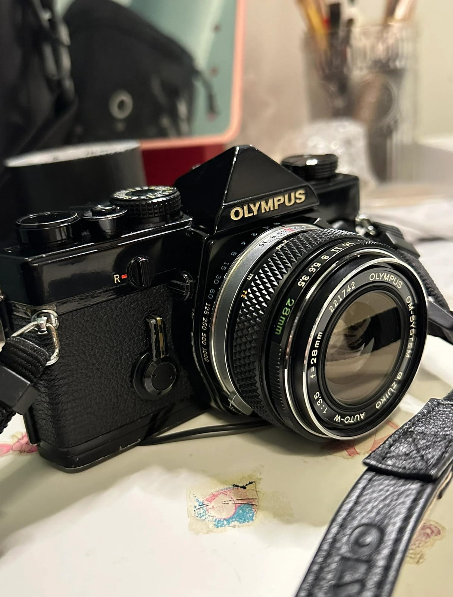

奥林巴斯 OM-1

开启轻量单反时代的 35mm 经典机型。
客观评测
奥林巴斯 OM-1 是 1972 年推出的 35mm 单反，机身仅约 480 克，比同时代单反轻了近一半。横走布帘快门 1 至 1/1000 秒，闪光同步 1/60 秒。内置 CdS 测光采用中央重点方式，取景器内指针重合即曝光正确，仅测光部分需要电池。五棱镜取景器视野率约 97%、放大率约 0.9 倍，明亮程度在同期机型中名列前茅，配套 Zuiko 镜头群同样小巧精良。
主观点评
OM-1 最大的魅力是把单反塞进了外套口袋。机身小巧却毫无玩具感，快门声轻而脆，光圈环与快门盘段落清晰。全机以机械结构为主，电池耗尽照样能拍，户外使用格外安心。搭配小巧的 Zuiko 镜头，整套系统轻若无物。它是轻量单反理念的开山之作，也影响了后来无数旅行相机的设计思路。
优点与不足
- 机身小巧轻便，旅行携带毫无负担
- 取景器明亮通透，同期单反中数一数二
- 纯机械快门，电池没电也能继续拍摄
- 快门震动相对明显
- 年代久远，需注意测光表老化
参数规格
| 类型 | 35mm 单镜头反光胶片相机 |
|---|---|
| 画幅 | 135 全画幅 |
| 胶片 | ISO 25-3200 |
| 快门 | 横走布帘快门，1-1/1000 秒及 B 门，X 同步 1/60 秒 |
| 测光 | 内置 CdS 中央重点测光（仅测光需电池） |
| 对焦 | 手动对焦（中央裂像/微棱对焦屏） |
| 取景 | 五棱镜取景器，视野率约 97%，放大率约 0.9 倍 |
| 连拍 | 单张，可配 MF-1 卷片马达 |
| 闪光 | 热靴 + PC 同步端子 |
| 卡口 | 奥林巴斯 OM 卡口 |
| 重量 | 约 480 克（机身） |